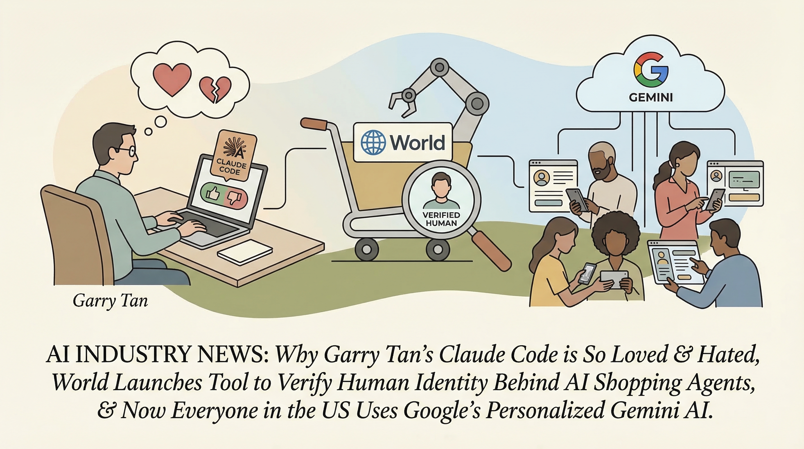

Rivia融资1300万欧元，用于开发临床试验中的AI代理
两克伴AIGC日报
2026-03-18 星期三

本期关注：Rivia筹集1300万欧元，将代理人工智能应用于临床试验、Meta的Manus AI代理抵达您的桌面，以应对OpenClaw、DLSS 5：英伟达的AI图形技术是否走得太远？、司法部表示，Anthropic无法被信任负责作战系统。
📰 行业动态
Meta发布桌面AI代理Manus，可读取、编辑和操作文件
Nvidia推出DLSS 5，引发玩家对AI图形技术的担忧
美国司法部称Anthropic无法被信任用于战争系统
Nvidia开发NemoClaw，旨在解决其最大的问题：安全性
🔥 今日焦点
标题：Show HN: ÆTHERYA Core – 确定性动作治理内核，为LLM代理赋能
简介：
RobertMihai开发的ÆTHERYA Core是一款创新的政策层，它位于LLM输出与工具执行之间。当前大多数代理设置中，LLM输出直接触发工具调用，进而执行，这种模式存在诸多问题，如缺乏确定性边界、审计保证，以及执行时易受prompt注入攻击。ÆTHERYA Core通过在执行前对每个提议的动作进行确定性约束评估，有效解决了这些问题。
MatrixOrigin近日推出了一项名为Memoria的开源项目，旨在解决AI代理的“记忆缺失”问题。AI代理虽然功能强大，但往往存在遗忘、幻觉和错误等缺陷。Memoria作为一个持久化内存层，借鉴了Git的版本控制理念，为AI代理的上下文提供了Git级别的控制。
这一创新对于AI领域具有重要意义。首先，Memoria能够帮助AI代理更好地记忆和学习，减少错误和幻觉的发生，从而提高AI系统的稳定性和可靠性。其次，通过版本控制，研究人员和开发者可以追踪AI代理的记忆变化，便于调试和优化。此外，Memoria的开放性使得更多研究者可以参与到AI代理记忆管理的研究中，加速相关技术的发展。
亚马逊CEO安迪·贾西在全员大会上预测，得益于客户对人工智能需求的激增，AWS在未来十年内有望实现年化销售额6000亿美元，远超2025年的1300亿美元。这一预测基于AWS与OpenAI的紧密合作，后者承诺未来八年将在AWS云服务器上投入近1400亿美元。双方正共同开发一项全新云服务，旨在帮助AWS客户构建基于OpenAI技术的定制化AI智能体，实现业务任务自动化。这一预测和合作对AI领域具有重要意义，不仅预示着云计算和AI技术的深度融合，也为AI在商业领域的广泛应用提供了强大动力。
📚 深度长文
本文深入探讨了推理模型与普通大型语言模型（LLMs）之间的差异，并提出了有效提示推理模型的方法。作者Devansh首先阐述了推理模型在处理复杂逻辑推理任务时的独特优势，随后详细分析了普通LLMs在推理能力上的局限性。在此基础上，文章提出了针对推理模型的优化策略，包括设计针对性的提示语、利用上下文信息增强推理能力等。文章的核心观点是，通过合理的设计和提示，可以显著提升推理模型的性能，使其在复杂任务中发挥更大的作用。阅读本文，读者不仅可以了解推理模型的基本原理，还能获得实际操作中的实用技巧，对于AI从业者和研究者具有重要的参考价值。本文深度剖析了推理模型的特性，提出了独特的见解，对于推动AI领域的发展具有重要意义。
📄 重点论文
**核心贡献**: 提出了一种名为Agent Rosetta的蛋白质设计代理，该代理利用大型语言模型执行复杂的科学任务，并通过机器学习技术进行蛋白质设计。
**与AI Agent的关联**: 为AI Agent在科学领域的应用提供了新的思路，展示了代理在复杂任务执行中的潜力。
**核心贡献**: 提出了模型工作区协议（MWP），这是一种用于AI代理编排的方法，通过文件夹结构来管理上下文传递、内存、错误处理和步骤协调。
**与AI Agent的关联**: 为多智能体系统的设计和实现提供了新的方法，有助于简化复杂系统的工程开销。
**核心贡献**: 研究了理论心智在基于LLM的多智能体协调中的作用，提出了适应性理论心智的概念，以改善智能体在协作任务中的协调。
**与AI Agent的关联**: 为多智能体系统的协调提供了新的理论框架，有助于提高智能体在复杂环境中的协作能力。
🛠️ 产品推荐
Claude-copy是一款专为Claude Code用户设计的辅助工具。其核心功能是自动复制Claude Code的输出结果至剪贴板，有效解决了传统复制方式在终端环境下的不稳定性和易出错问题。该产品通过精确识别聚焦的终端会话，读取JSONL格式的转录文件，实现了无干扰、高效率的复制过程。Claude-copy的出现，极大提升了技术从业者在使用Claude Code时的工作效率，降低了因复制错误导致的潜在风险。
---
Show HN: Agent-fs – Agent-fs是一款专为智能代理和人类用户设计的文件系统。该产品旨在解决远程代理间双向共享和检查数据的问题。通过Agent-fs，代理可以轻松创建、存储和访问文件，实现高效的数据协作。其核心功能在于简化数据传输，提高工作效率，特别适用于需要远程协作的场景。Agent-fs的AI能力体现在其智能数据管理机制，能够根据用户需求自动优化数据存储和访问策略，为用户提供更加便捷、高效的数据处理体验。
---
Show HN: TideSurf是一款创新的浏览器使用代理工具。其核心功能是将渲染后的DOM以Markdown-like压缩方式发送给代理，大幅降低Token消耗。相比传统方法，TideSurf在GitHub上的Token消耗减少了32倍。该产品有效解决了LLM Agents在处理大量上下文信息时性能低下的问题，为技术从业者提供了一种高效、便捷的浏览器代理解决方案。